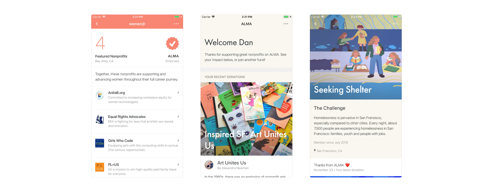
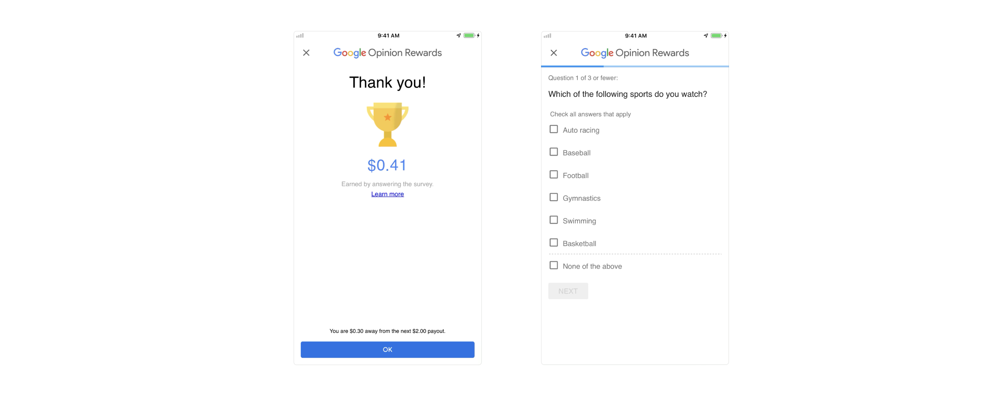
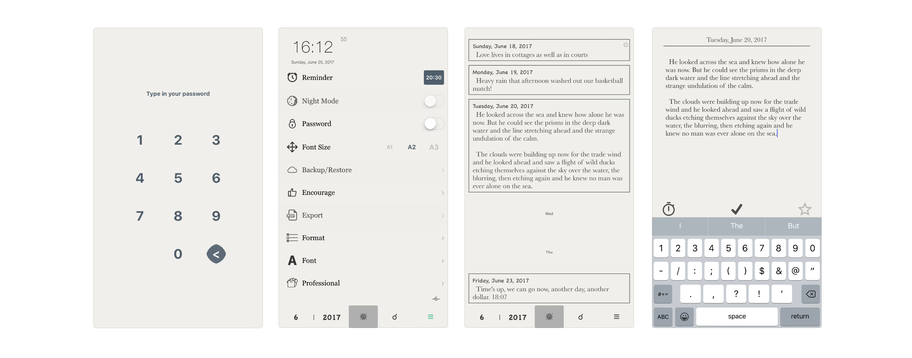

Cynthia Chen Back Home

ALMA Philanthropy
ALMA is a way to donate in the modern age—where nonprofits are just a click away, connections are built digitally, and we can view our impact through visualizations. Not only does ALMA provide a way for users to easily donate and search for charities / funds within a click of a button, but ALMA also provides an impact report about how your donation contributed to the nonprofit as well as a tax receipt. The overall app aims to enhance donating / altruism in our modern age with tech.
The overall UI and visual branding is light, fun, personal, and modern. The use of colorful illustrations, as well as the color scheme being soft pastel combinations, gives off a general happy and friendly personality to the app. This makes sense, given that the app's purpose is to encourage users to donate—users more likely to do so in a friendly and encouraging environment.
Furthermore, the users can choose between various functionalities, whether that be 1) "discovering" charities, 2) "donating", or 3) "creating" personal fundraisers. These navigations are clear to access, as it's all in the home page of the app / site. Discovering various charities is easy for users, as there are categories for various organizations (such as education, women, tech). Thus allows users to align themselves with various charities all belonging to a topic they feel strongly about! Furthermore, users can join communities of charities they're interested in, building a communal aspect. Not only do users feel like they're contributing to society, but feel like they've made friends along the way, and so donating seems "fun" and life-giving. The app itself isn't clunky or hard to use; it's instead modern (as modern as apps such as Facebook) which draws app-users in even just from scrolling through the App store. The "feel-good" idea of it, as well as the clean and friendly UI, draws people to this app.

Google Opinion Rewards
How can the influx of tech companies be used to our advantage? How can we make money from them instead of the other way around? User research is often always underway for various products at companies—such as Google—and they're always often in need of participants. These often result in in-person and survey interviews, which end up giving out free money! Many people don't know about this; this app facilitates a way for users to collect money from Google in exchange for participating in various studies. This way, tech companies and people are in a symbiotic relationship together; it's not a one-sided consumer standpoint.
It's clear from just viewing the app that it's a Google branded app—the colors are all Google colors, as well as the font and overall styling. The app acts almost like a Google Form app, which makes things easier for users; they don't need to adjust to a new UI. Users choose the study they want to participate in, get redirected to a Google Form, then, on completion, have a simple screen displaying the money they've earned as well as how much they need till their next payout.
The app has a simple user flow / information architecture, as it is not necessary for the app to have complex features. The usability is fairly simple; 1) users sign in 2) complete study 3) get rewarded. In psychology, when people are given more steps to accomplish than needed, they get distracted / discouraged to finish the task ahead of them. Thus, in order to simply the steps as much as possible, the app doesn't have a great deal of features and the branding / style guide is very simple as well. Furthermore, the app has a virtual "piggy bank" which allows users to keep track of how much money they're earning through this program.

Diary With Password
Diary With Password serves as a secure, password protected digital diary. Not only is your writing tools always at your disposal (your phone!), it's an easy way to pull up the app and jot something down whenever and anywhere. This app serves a greater purpose than a normal notes app on the app store, as it's a specific location for diary-keeping and allows the user to look back upon old writings easily.
The app first opens with a password page; users need to input the correct password in order to access the app. After the password stage, users have access to either a space to write down what they're thinking, or looking through what they've written past days. The overall UI and styling of the app is very rustic—like a physical book—with colors that are warm and don't hurt the eyes or are too bright. Thus, this note taking app is digital, but still shows roots in its physical book counterpart.
The app also allows you to write in reminders for daily dairy-keeping, so it serves a habit maker function as well. Writing often is soothing and emotionally helpful for many people, and so this app not only serves as a location to write, but also encourages / reminds users to do so. Furthermore, what sets this app apart from other diary apps is the past entries functionality. Users are able to view past diary entries they've made, but in a query style format. They're given access to see a few lines of text without needing to open up the entire entry, which makes things easier for users. Lastly, the app gives much personalization needed for the user—users can change the font, colors, font sizes, app dark / day mode, etc. This allows users to really take it in as their own and make the setting as comfortable as possible, designing the app to their own interest.